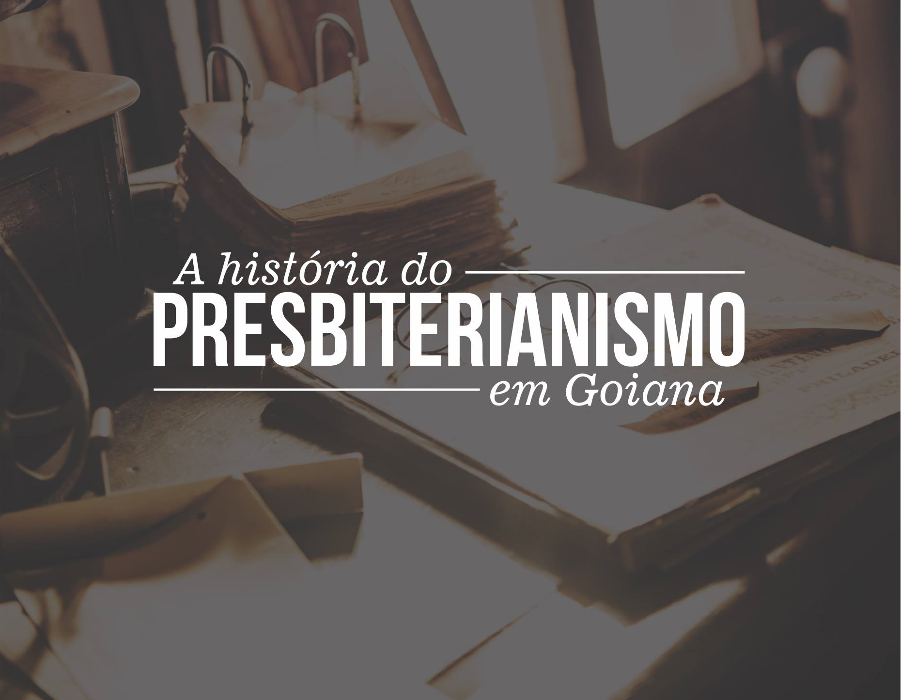

A história do Presbiterianismo na cidade.
postado em 20 de Março de 2022 A história do presbiterianismo na cidade de Goiana não é nova, remonta ao século 19, quando o missionário americano John Rockwell Smith chegou a Pernambuco. A Igreja Presbiteriana de Goiana foi a segunda igreja organizada no Estado de Pernambuco e na região Nordeste, no dia 21 de novembro de 1880.
A Igreja Presbiteriana em Goiana tornou-se uma Igreja produtiva dando ao presbiterianismo bons pastores para servir ao Reino de Deus. Dentre estes, destaca-se o Rev. Juventino Marinho da Silva. Ele nasceu em Goiana no dia 25 de janeiro de 1860. Conheceu a fé reformada ainda jovem, aos dezoito anos, em 1878, através da leitura da Bíblia e de livros e artigos evangélicos, sendo ordenado ao ministério em 26 de setembro de 1889. Tornou-se pastor da primeira IP do Recife, além de participar da plantação de diversas igrejas naquela cidade e em diferentes cidades, como Macéio-AL, João Pessoa-PB e em Canhotinho e Garanhuns, ambas em Pernambuco.
Mesmo diante desse imenso potencial, não sabemos ao certo como, quando e o porquê da IP em Goiana ter definhado em seu vigor e fechado suas portas por alguns anos. Mas há mais de vinte anos o trabalho na cidade foi retomado pela IP de Bairro Novo, a qual tem contribuído de forma singular, enviando obreiros que deixaram suas marcas ao longo dos anos e juntamente com os irmãos dessa comunidade que pelo seu amor ao Evangelho, têm batalhado o bom combate.
Desde 25 de janeiro de 2015, o Rev. Diego Cardoso e sua esposa Juliete Alves, juntamente com o Rev. Edilton e família, têm estado à frente deste trabalho, com o propósito de revitalizá-lo. Recentemente, Goiana teve o privilégio de receber mais uma congregação Presbiteriana, trabalho iniciado pela Primeira Igreja Presbiteriana do Recife, sob à liderança do Rev. Edilton Alves de Carvalho e família. É mais uma comunidade que se junta para proclamarmos o evangelho em solo goianense. Que Deus faça sua obra crescer mais e mais.
Que o Senhor nos abençoe e nos conceda a graça necessária para proclamarmos ao mundo as virtudes d'Aquele que nos chamou das trevas para a Sua maravilhosa Luz. Que ao Nome de Jesus se dobre todo joelho, não só na cidade de Goiana, mas, no céu e na terra.
Fonte: Primeira Igreja Presbiteriana do Recife (Adaptado).